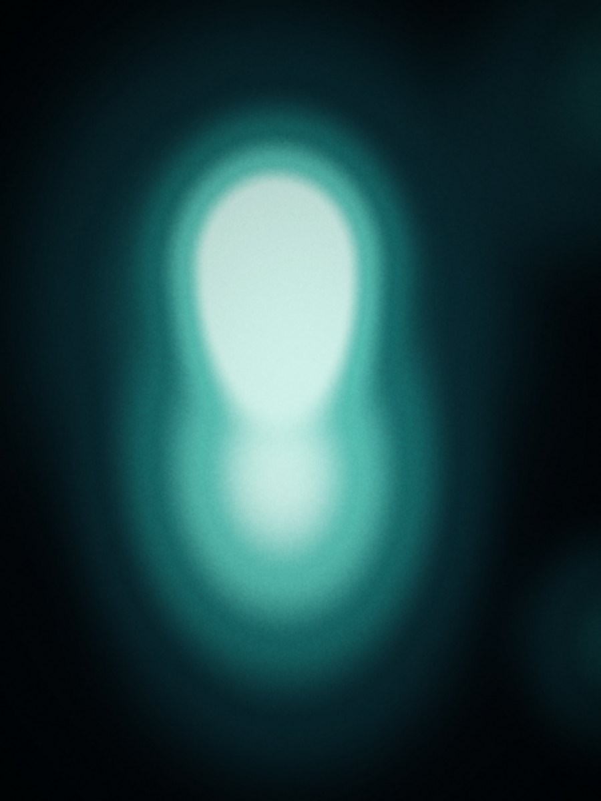
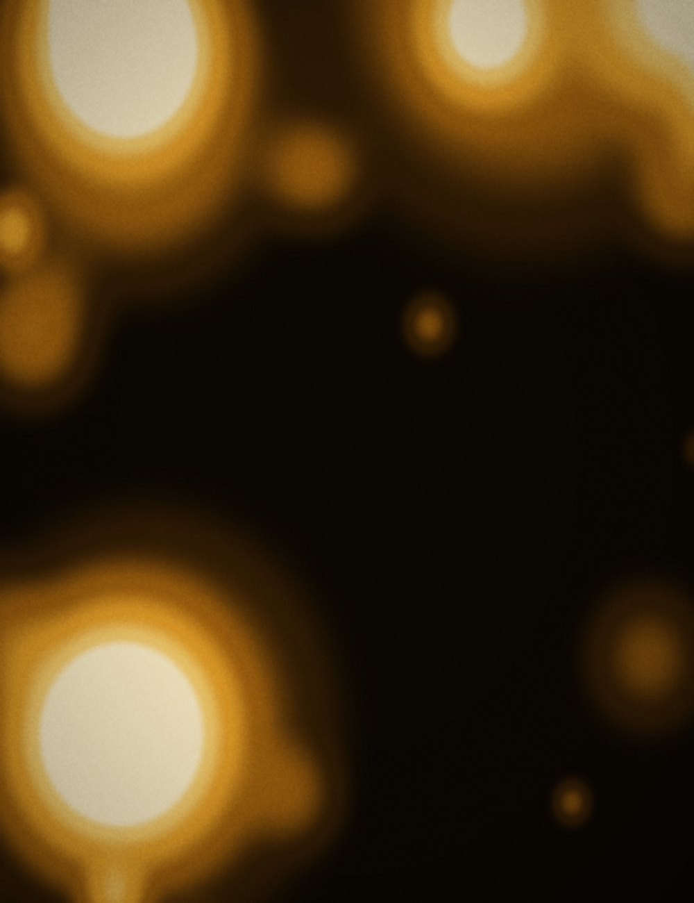
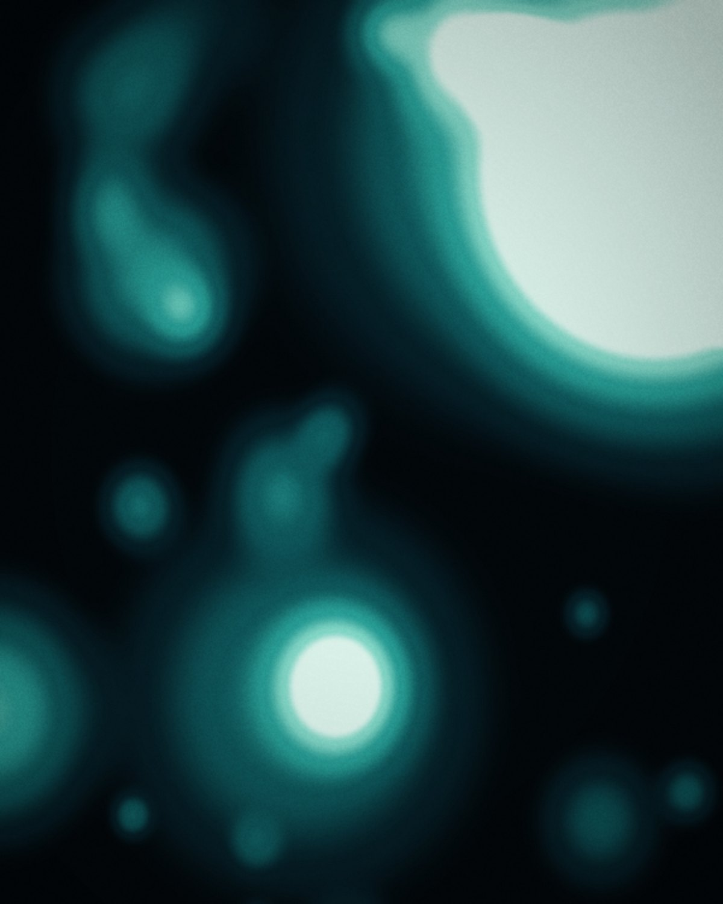

We go through your recurring work and give every task one of three verdicts. We build only the third, and we put in writing what we will not build.
How it works
Based in Prague. We build in the tools you already use, and the scenarios and access stay yours.
About us
Breakdown. Pilot. Build. Run.
Five steps. The first two are free and end in a written breakdown.
Services
The most common verdict you will hear from us is: you need nothing.
Three verdicts on every recurring task in your workload.
Tell us what slows you down most. Michael replies, usually by the end of the working day.
Write to usFirst call 45 minutes, free.
Written breakdown within a week, also free.